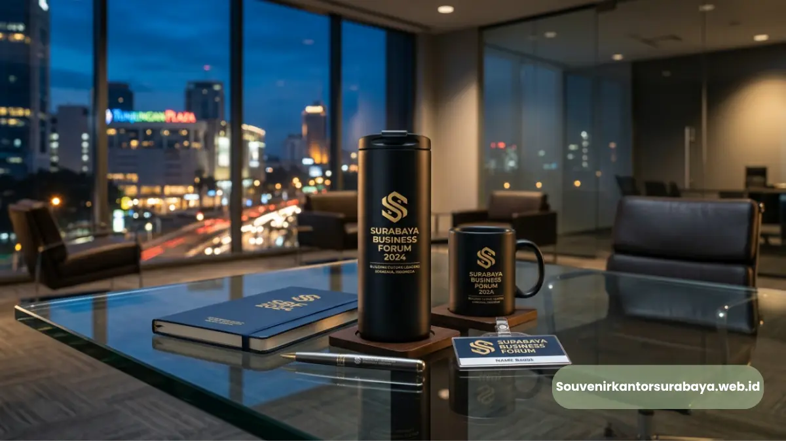
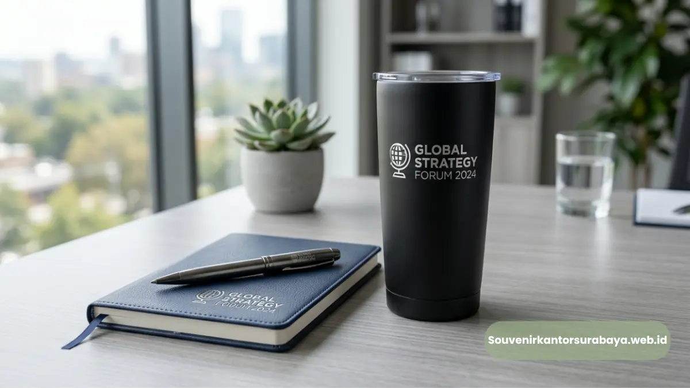

- Bagaimana Proses Custom Logo pada Souvenir Seminar Dilakukan?
- Apa Saja Teknik Cetak yang Digunakan untuk Souvenir Custom Logo?
- Bagaimana Menentukan Teknik Cetak yang Tepat?
- Apa Saja yang Perlu Disiapkan Sebelum Memesan Souvenir Custom Logo?
- Mengapa Konsistensi Logo Penting pada Souvenir Seminar?
- Bagaimana Souvenir Custom Logo Memengaruhi Persepsi Klien atau Mitra Bisnis?
- Berapa Lama Waktu Produksi Souvenir Custom Logo untuk Seminar?
Souvenir untuk Seminar Surabaya Custom Logo Perusahaan Anda
Souvenir seminar custom logo adalah merchandise yang dicetak dengan logo perusahaan menggunakan teknik seperti sablon, bordir, laser engraving, atau UV printing. Proses ini memungkinkan identitas visual perusahaan tampil konsisten pada setiap souvenir yang dibagikan kepada peserta seminar.
- Custom logo pada souvenir seminar dilakukan melalui teknik cetak sesuai jenis material produk.
- Persiapan file logo beresolusi tinggi dan warna korporat sangat memengaruhi hasil akhir cetakan.
- Waktu produksi custom logo bervariasi tergantung teknik cetak dan jumlah pesanan.
- Souvenir custom logo membantu membangun konsistensi identitas visual perusahaan di setiap acara.
- souvenirkantorsurabaya.web.id melayani proses custom logo untuk berbagai jenis souvenir seminar.
Bagaimana Proses Custom Logo pada Souvenir Seminar Dilakukan?
Proses custom logo pada souvenir seminar umumnya dimulai dari penyerahan file desain logo perusahaan, penentuan posisi cetak, hingga pemilihan teknik yang sesuai dengan material produk. Setiap jenis souvenir memiliki metode cetak berbeda agar hasil akhir terlihat rapi dan tahan lama.
Apa Saja Teknik Cetak yang Digunakan untuk Souvenir Custom Logo?
Beberapa teknik cetak yang umum digunakan pada souvenir seminar meliputi sablon untuk material kain seperti tas dan goodie bag, bordir untuk produk tekstil premium, laser engraving untuk material logam atau kayu seperti tumbler dan gantungan kunci, serta UV printing untuk permukaan plastik dan akrilik seperti flashdisk dan casing.
Bagaimana Menentukan Teknik Cetak yang Tepat?
Penentuan teknik cetak biasanya disesuaikan dengan daya tahan yang diinginkan serta tampilan akhir yang diharapkan. Sablon lebih ekonomis untuk pesanan dalam jumlah besar, sementara laser engraving memberikan kesan lebih premium dan tahan lama untuk material keras.
Apa Saja yang Perlu Disiapkan Sebelum Memesan Souvenir Custom Logo?
Sebelum proses cetak dimulai, perusahaan umumnya perlu menyiapkan beberapa hal berikut agar hasil custom logo sesuai dengan identitas visual yang diinginkan.
- File logo beresolusi tinggi dalam format vektor agar hasil cetak tetap tajam pada berbagai ukuran produk.
- Ketentuan warna korporat (brand color) agar warna logo pada souvenir konsisten dengan materi promosi lain.
- Jumlah pesanan yang dibutuhkan sesuai estimasi peserta seminar.
- Tenggat waktu produksi agar souvenir siap sebelum tanggal pelaksanaan seminar.

Mengapa Konsistensi Logo Penting pada Souvenir Seminar?
Konsistensi logo pada setiap souvenir yang dibagikan turut memperkuat pengenalan merek di mata peserta. Ketika warna, proporsi, dan posisi logo seragam di berbagai jenis souvenir, kesan profesional perusahaan akan lebih mudah terbentuk dibandingkan souvenir dengan cetakan logo yang tidak konsisten.
Bagaimana Souvenir Custom Logo Memengaruhi Persepsi Klien atau Mitra Bisnis?
Bagi seminar yang turut mengundang klien atau mitra bisnis eksternal, souvenir dengan cetakan logo yang rapi dan berkualitas turut mencerminkan standar profesionalisme perusahaan penyelenggara. Kesan pertama dari souvenir yang diterima dapat memengaruhi persepsi mitra terhadap kredibilitas perusahaan secara keseluruhan.
Berapa Lama Waktu Produksi Souvenir Custom Logo untuk Seminar?
Durasi pengerjaan custom logo dapat bervariasi tergantung jenis material, teknik cetak, serta jumlah pesanan. Pemesanan yang dilakukan jauh sebelum tanggal seminar memberikan ruang lebih untuk proses produksi, revisi desain apabila diperlukan, hingga pengecekan kualitas sebelum souvenir dikirimkan.
Bagi perusahaan yang membutuhkan proses custom logo yang rapi dan tepat waktu untuk souvenir seminar, souvenirkantorsurabaya.web.id siap membantu mulai dari konsultasi desain logo hingga proses produksi souvenir seminar di Surabaya.
Souvenir seminar custom logo membantu perusahaan menampilkan identitas visual yang konsisten dan profesional di setiap acara. Persiapan file logo, penentuan teknik cetak, serta pemesanan yang dilakukan lebih awal akan memastikan hasil akhir souvenir sesuai harapan.
Konsultasikan kebutuhan custom logo souvenir seminar Anda melalui souvenirkantorsurabaya.web.id untuk proses yang rapi dan tepat waktu.

Hawa Nadira
Tim penulis CorporateGifts ID berfokus pada strategi souvenir kantor, merchandise korporat, dan inovasi brand untuk klien B2B.
Keahlian: Branding perusahaan, produksi souvenir, paket event, desain materi promosi.
Artikel Terkait

Block Note Spiral Hard Cover Perusahaan Surabaya Premium
Block note spiral hard cover perusahaan Surabaya adalah buku catatan bersampul keras custom logo premium untuk merchandise korporat.
Baca SelengkapnyaCustom Logo Block Note Spiral Hard Cover untuk Branding Perusahaan
Proses mencetak identitas visual perusahaan pada cover notebook menggunakan teknik hot print, sablon digital, atau UV printing.
Baca Selengkapnya
Souvenir Kantor Surabaya
Panduan komprehensif memilih souvenir kantor berkualitas tinggi untuk meningkatkan brand awareness dan hubungan bisnis.
Baca Selengkapnya